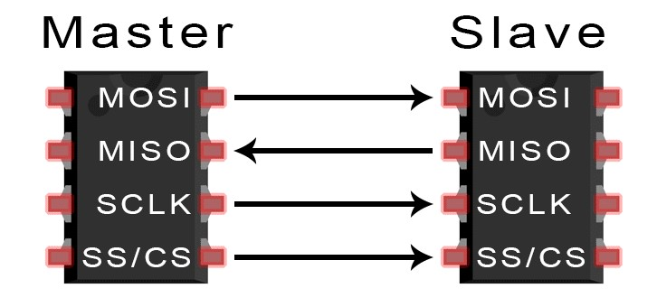
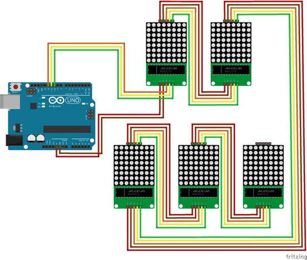
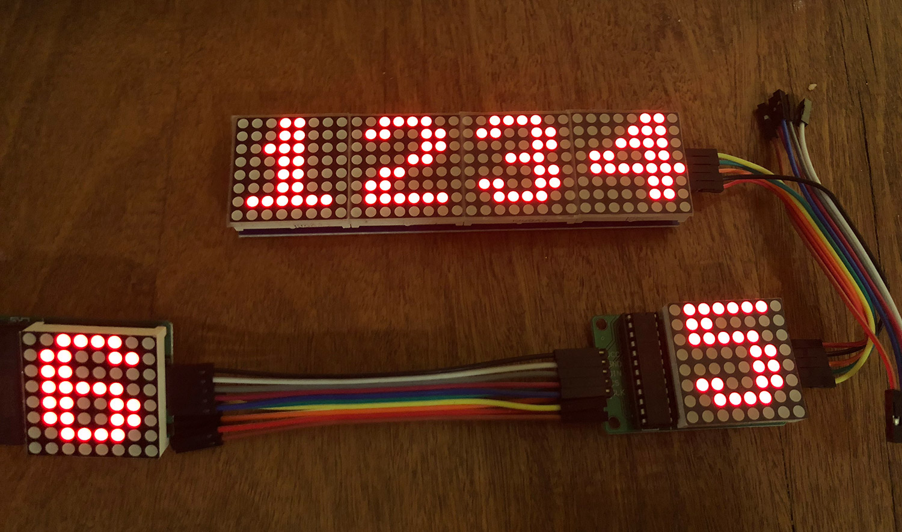

Connectivity to components (Protocol):-
Our led driver IC (MAX7219CNG) works on SPI serial interface communication. Unique characteristic of that communication protocol is that it can transfer data without any interruption. Devices communicating via SPI are in a master-slave relationship. The master is the controlling device (usually a microcontroller), while the slave (usually a sensor, display, modules, or memory chip) takes instruction from the master. The simplest configuration of SPI is a single master, single slave system, but one master can control more than one slave. Another advantage is that it has a separate MOSI and MISO lines so data can be transferred without any interruption.

|
Brief description of electrical schematic:-
Now let’s take a closer look at the MAX7219 driver. The IC is capable of driving 64 individual LEDs while using only 3 wires for communication with the Arduino, and what’s more we can daisy chain multiple drivers and matrixes and still use the same 3 wires.
The 64 LEDs are driven by 16 output pins of the IC. The question now is how is that possible. Well the maximum number of LEDs light up at the same time is actually eight. The LEDs are arranged as 8×8 set of rows and columns. So the MAX7219 activates each column for a very short period of time and at the same time it also drives each row. So by rapidly switching through the columns and rows the human eye will only notice a continuous light.
Note how the pins of a common 8×8 LED Matrix are internally arranged, so if you are building a matrix on your own you should consider it. Also note that a common breakout board for the MAX7219 comes with a resistor between the 5V and the IC pin number 18. The resistor is used for setting the brightness or the current flow to the LEDs.
The following table from the datasheet of the IC shows the value of the resistor that we should use according to the forward voltage drop of our LEDs.
When we started to explore hooking up scrolling text, we found some library which supported these function like scrolling and alignment pattran on LED matrix.But It takes a lot of time time to crack the library function.Even more then 20 time we fail to run code properly because of interconnection of Max with Arduino and Sometime get problems because of clustering of wire LED (Connection of LED Matrix and Max7219 IC),
Wiring Instructions
- Connect Arduino pin12 to DIN on 8×8 LED Matrix
- Connect Arduino pin10 to CS of 8×8 LED Matrix
- Connect Arduino pin11 to CLK of 8×8 LED Matrix
- Connect an external 5VDC (1A) to VCC of 8×8 LED Matrix
- Connect external 5VDC supply’s GND, to the GND of 8×8 LED Matrix Module
Note that the 8x8LED Matrix Module should be common-grounded with Arduino, ie, always remember to interconnect the Arduino GND terminal with the external 5VDC power supply GND terminal. Connect pins according to the instructions given above, and download the sketch into Arduino board. If everything seems right, you can power up the Arduino (and the LED matrix) to see the LED matrix circularly displays output.
Cascading of Led Matrix:-To display larger messages only 1 matrix is not sufficient. Therefore multiple matrices needs to be cascaded in order to get bigger display. For this purpose they are cascaded and mostly in series so to have no difficulties while programing. As we know that our IC works as a shift register which purposely work as shifting of data so it has data out pin along with data in. Therefore from one module Data out pin is entered into Data in, in order to cascade them and data linearly (serially) flow between modules. |
 |  |
Different Ways of Cascading
Warning !
Before powering up, ensure that corresponding wires are properly connected.
Connecting Led matrix with MAX7219CNG:-
As we know that the anodes of a led matrix is connected together for each row so making one pin (terminal) and so that for cathode. Common anode is connected to SEGMENTS (A-H) while common cathode is connected to DIG (0-7) of the IC.
They can be directly connected to the MAX72XX. Some are arranged as column cathode and some are column anode (as in the diagram above). Either type will work but you must connect the anodes to the Seg lines and cathodes to the Dig lines
and arrange your source data to suit (e.g. be prepared to swap rows for columns). Table shows the configuration of pins of matrix with the MAX7219CNG.
|
| Rows corresponding to Pins of Matrix |
Connection with MAX7219CNG & pin number of IC |
| Row 1 , Pin 9 |
SEG DP,PIN 15 |
| Row 2,Pin 14 |
SEG A, PIN 23 |
| Row 3,Pin 8 |
SEG B , PIN 21 |
| Row 4 , Pin 12 |
SEG C, PIN 17 |
| Row 5 , Pin 1 |
SEG D, PIN 14 |
| Row 6 , Pin 7 |
SEG E , PIN 16 |
| Row 7 , Pin 2 |
SEG F , PIN 22 |
| Row 8 , Pin 5 |
SEG G , PIN 20 |
|
| Column corresponding to Pins of Matrix |
Connection with MAX7219CNG & pin number of IC |
| Column 1 , Pin 13 |
DIG 0,PIN 2 |
| Column 2,Pin 3 |
DIG 1, PIN 11 |
| Column 3,Pin 4 |
DIG 2, PIN 6 |
| Column 4 , Pin 10 |
DIG 3, PIN 7 |
| Column 5 , Pin 6 |
DIG 4, PIN 3 |
| Column 6 , Pin 11 |
DIG 5 , Pin 10 |
| Column 7 , Pin 15 |
DIG 6 , Pin 5 |
| Column 8 , Pin 16 |
DIG 7 , Pin 8 |